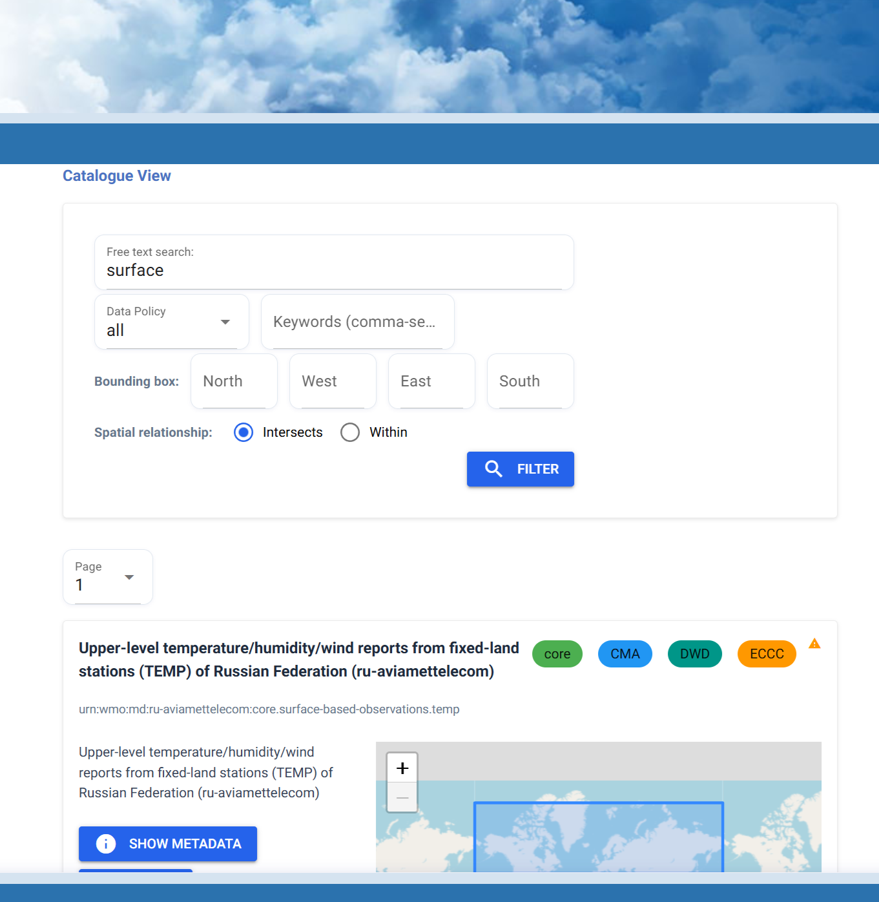
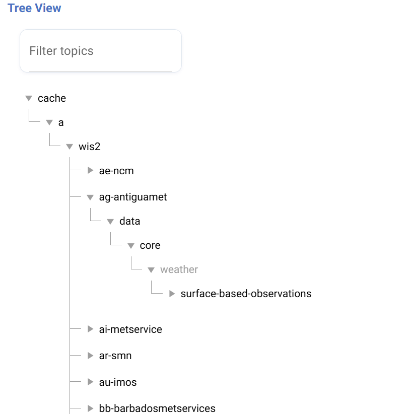
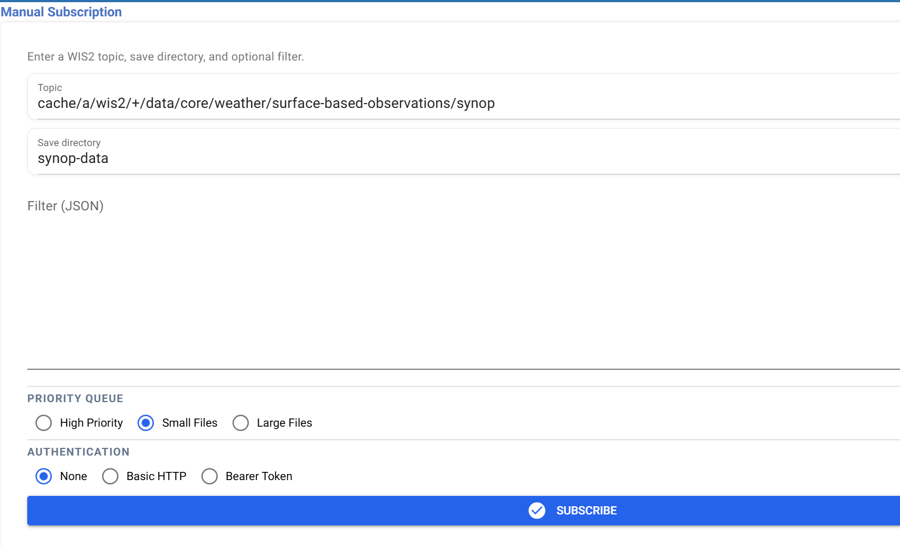

تنزيل باستخدام WIS2 Downloader
نتائج التعلم!
بنهاية هذه الجلسة العملية، ستكون قادرًا على:
- العثور على مجموعات البيانات والاشتراك فيها
- استخدام التصفية للتحكم في الملفات التي يتم تنزيلها
- استخدام المصادقة لتنزيل مجموعات البيانات ذات الوصول المقيد
- تغيير الإعداد الافتراضي لـ WIS2 Downloader لحالات الاستخدام المتقدمة
المقدمة
في نظام WIS2، تحتوي جميع مجموعات البيانات على ملف بيانات وصفية يمكن العثور عليه في Global Discovery Catalogues. لذلك، يُنصح دائمًا للمستخدمين بالرجوع إلى هذه الخدمات للعثور على البيانات التي يتم مشاركتها على WIS2.
يستخدم WIS2 Downloader هذا المبدأ من خلال العثور على جميع السجلات المتاحة في هذه الـ GDCs ودمجها داخليًا لتمكين المستخدم من التنقل عبر البيانات المتاحة على WIS2. نظرًا للعدد الكبير من السجلات المعروضة، من الضروري توفير طريقة للمستخدم لتصفية السجلات والعثور على السجل الصحيح. حتى بعد العثور على السجل الصحيح والاشتراك فيه، قد تكون هناك مجموعات بيانات تحتوي على عدد من الملفات يفوق احتياجات المستخدم الحالية. لهذا السبب، هناك حاجة إلى مستوى ثانٍ من التصفية — يعمل عند اتخاذ قرار بشأن ما إذا كان يجب تنزيل ملف معين.
استخدام عرض الكتالوج
عرض الكتالوج هو إحدى الطريقتين للعثور على مجموعات البيانات والاشتراك فيها باستخدام WIS2 Downloader. يقوم بتجميع السجلات من Global Discovery Catalogues ويعرضها في واجهة قابلة للبحث والتصفية — مشابهة لتصفح بوابة GDC مباشرة.
انتقل إلى عرض الكتالوج من الشريط الجانبي الأيسر.

في أعلى الصفحة، ستجد شريط بحث ومجموعة من الفلاتر. يمكنك استخدام هذه الأدوات لتضييق قائمة السجلات المتاحة باستخدام الكلمات المفتاحية، أو Centre ID، أو سياسة البيانات (core مقابل recommended).
يمكنك أيضًا التصفية مكانيًا عن طريق تحديد مربع حدود باستخدام أربعة مدخلات إحداثيات — الشمال، الغرب، الجنوب، والشرق — معبرًا عنها كقيم خطوط الطول والعرض العشرية. عند تعيين مربع الحدود، يمكنك الاختيار بين وضعين للمطابقة:
- Intersects — يعرض السجلات التي تتداخل مساحتها الجغرافية مع مربع الحدود بأي شكل.
- Within — يعرض فقط السجلات التي تقع مساحتها الجغرافية بالكامل داخل مربع الحدود.
إعادة تحميل الكتالوج
يتم تحميل الكتالوج من GDCs عند بدء تشغيل WIS2 Downloader. إذا كنت تعتقد أن القائمة قديمة، يمكنك فرض إعادة تحميل من قسم الإعدادات في الشريط الجانبي الأيسر.
تمرين: العثور على مجموعة بيانات والاشتراك فيها
العثور على مجموعة بيانات لمراقبة السطح
استخدم الفلاتر في عرض الكتالوج للعثور على مجموعة بيانات core لمراقبة السطح تتعلق بدرجة الحرارة وهطول الأمطار.
- اكتب
surfaceفي شريط البحث ولاحظ كيف يتم تصفية قائمة السجلات. - قم بتعيين فلتر سياسة البيانات إلى core.
- قم بتعيين الكلمات المفتاحية لتتضمن
temperature, precipitationولاحظ كيف تتغير النتائج. - اختر سجلًا من النتائج لعرض تفاصيله.
- راجع البيانات الوصفية المعروضة — لاحظ الموضوع، المركز الأصلي، وسياسة البيانات.
- قم بتعيين مجلد الوجهة إلى
surface-obs. - انقر على Subscribe لإنشاء الاشتراك.
بعد الاشتراك، انتقل إلى إدارة الاشتراكات لتأكيد ظهور الاشتراك الجديد في القائمة.
انقر للكشف عن الإجابة
أي سجل يحتوي موضوعه على surface-based-observations وسياسة بياناته هي core يعتبر اختيارًا صالحًا. سيؤدي تطبيق فلتر الكلمات المفتاحية temperature, precipitation إلى تضييق النتائج أكثر لتشمل مجموعات البيانات ذات الصلة بهذه المتغيرات.
بمجرد الاشتراك، ستعرض واجهة إدارة الاشتراكات الاشتراك النشط مع موضوعه ومجلد الهدف. ستبدأ الملفات في التنزيل عند وصول إشعارات جديدة على الوسيط.
إلغاء الاشتراك وحذف الملفات التي تم تنزيلها
انتقل إلى واجهة إدارة الاشتراكات وقم بـ Unsubscribe من الموضوع الذي تم اختياره في التمرين السابق.
بعد ذلك، قم بتنظيف مجلد التنزيلات:
rm -fr /home/<username>/wis2-downloads/surface-obs
استخدام عرض الشجرة
عرض الشجرة يعرض تسلسل موضوعات WIS2 كهيكل شجري قابل للطي، مما يتيح لك استكشاف الموضوعات المتاحة مستوى بمستوى — مشابه للتنقل في الموضوعات باستخدام MQTT Explorer. تم تصميمه لاستكشاف البيانات المتاحة على WIS2 من الأعلى إلى الأسفل، بدءًا من جذر التسلسل الهرمي والتعمق فيه. يختلف هذا عن عرض الكتالوج، الذي يأخذك مباشرة إلى سجلات مجموعات البيانات الفردية وهو أكثر ملاءمة عندما تعرف بالفعل ما تبحث عنه.
انتقل إلى عرض الشجرة من الشريط الجانبي الأيسر.

يتم تنظيم الشجرة وفقًا لتسلسل موضوعات WIS2. قم بتوسيع كل مستوى بالنقر على عقدة للكشف عن العناصر الفرعية. في أي مستوى، يمكنك الاشتراك عن طريق تحديد عقدة والنقر على Subscribe — باستخدام رمز البدل (#) لالتقاط جميع الموضوعات أسفل تلك العقدة.
الاشتراك في مستويات مختلفة
الاشتراك في مستوى أعلى في الشجرة (مثل مستوى Centre ID) سيشمل جميع مجموعات البيانات المنشورة من قبل هذا المركز. الاشتراك في مستوى أدنى يمنحك تحكمًا أكثر دقة. يتم تلقائيًا إلحاق رمز البدل # بواسطة WIS2 Downloader عند الاشتراك من عرض الشجرة.
تمرين: العثور على مجموعة بيانات والاشتراك باستخدام عرض الشجرة
الاشتراك في مجموعة بيانات عبر عرض الشجرة
استخدم عرض الشجرة للعثور على بيانات مراقبة السطح من مركز معين والاشتراك فيها.
- قم بتوسيع الشجرة بدءًا من عقدة
cache، ثم انتقل عبرa→wis2. - اختر Centre ID من اختيارك واستمر في التوسع حتى تصل إلى موضوع متعلق بـ
surface-based-observations. - راجع المسار الكامل للموضوع المعروض — تأكد من أنه يتوافق مع مجموعة البيانات التي تريدها.
- قم بتعيين مجلد الوجهة إلى
surface-obs-tree. - انقر على Subscribe لإنشاء الاشتراك.
انتقل إلى إدارة الاشتراكات لتأكيد أن الاشتراك نشط.
انقر للكشف عن الإجابة
أي مسار موضوع يتبع النمط cache/a/wis2/<centre-id>/data/core/weather/surface-based-observations/# يعتبر اختيارًا صالحًا. سيختلف جزء Centre ID بناءً على المركز الذي اخترته في الشجرة.
ستعرض واجهة إدارة الاشتراكات الاشتراك الجديد إلى جانب أي اشتراكات تم إنشاؤها مسبقًا.
إلغاء الاشتراك وحذف الملفات التي تم تنزيلها
انتقل إلى واجهة إدارة الاشتراكات وقم بـ Unsubscribe من الموضوع الذي تم اختياره في التمرين السابق.
بعد ذلك، قم بتنظيف مجلد التنزيلات:
rm -fr /home/<username>/wis2-downloads/surface-obs-tree
استخدام عرض الاشتراك اليدوي
عرض الاشتراك اليدوي يتيح لك إنشاء اشتراك عن طريق إدخال موضوع مباشرة، دون الاعتماد على Global Discovery Catalogues. على عكس عرض الكتالوج وعرض الشجرة — اللذين يستمدان موضوعاتهما من GDCs — يكون عرض الاشتراك اليدوي مفيدًا عندما تعرف بالفعل الموضوع الدقيق الذي تريد الاشتراك فيه وترغب في إعداده دون تصفح الكتالوج مع مزيد من الحرية في تحديد WTH المراد استخدامه.
انتقل إلى عرض الاشتراك اليدوي من الشريط الجانبي الأيسر.

النموذج يتيح لك تحديد:
- Topic — الموضوع الكامل لـ MQTT للاشتراك فيه، بما في ذلك أي رموز بدل (مثل
#و+). - مجلد الوجهة — الدليل الفرعي المحلي حيث سيتم حفظ الملفات التي تم تنزيلها.
- الفلتر — كائن فلتر اختياري في شكل نصي للتحكم في الإشعارات التي يتم تنزيلها.
- أولوية قائمة الانتظار — تتحكم في أولوية التنزيل المخصصة للإشعارات من هذا الاشتراك.
- المصادقة — بيانات الاعتماد المطلوبة لمجموعات البيانات ذات الوصول المقيد.
متى تستخدم عرض الاشتراك اليدوي
استخدم عرض الاشتراك اليدوي عندما تعرف بالفعل الموضوع الدقيق الذي تريده وترغب في إعداده بسرعة دون تصفح الكتالوج، أو عندما لا يكون الموضوع مدرجًا في الكتالوج، أو عندما تحتاج إلى تقديم بيانات اعتماد لمجموعة بيانات ذات وصول مقيد.
التنزيل من مجموعة بيانات ذات وصول مقيد
بعض مجموعات البيانات على WIS2 ذات وصول مقيد، مما يعني أنها تتطلب بيانات اعتماد صالحة قبل أن يمكن تنزيل الملفات. يدعم WIS2 Downloader طريقتين للمصادقة في عرض الاشتراك اليدوي:
- مصادقة HTTP الأساسية — تقديم اسم مستخدم وكلمة مرور مرتبطة ببيانات الاعتماد الخاصة بك.
- رمز Bearer — تقديم رمز صادر عن ناشر البيانات بدلاً من اسم المستخدم وكلمة المرور.
يتم تخزين بيانات الاعتماد هذه لكل اشتراك وتطبيقها تلقائيًا عند تنزيل الملفات لهذا الموضوع.
تمرين: الاشتراك في مجموعة بيانات ذات وصول مقيد على wis2box الخاص بك
في هذا التمرين، ستقوم بإعداد مجموعة بيانات ذات وصول مقيد على مثيل wis2box الخاص بك، وتكوين WIS2 Downloader للاشتراك في الوسيط الخاص به، والتحقق من تنزيل الملفات بشكل صحيح عند تقديم رمز Bearer.
إعداد والاشتراك في مجموعة بيانات ذات وصول مقيد
الخطوة 1 — إنشاء مجموعة بيانات ذات وصول مقيد على wis2box
على مثيل wis2box الخاص بك، قم بإنشاء مجموعة بيانات مع تمكين التحكم في الوصول وقم بتدوين الموضوع ورمز Bearer الذي تم إنشاؤه لها. إذا لم تقم بذلك بالفعل، راجع جلسة Datasets with access control العملية للحصول على خطوات الإعداد الكاملة.
الخطوة 2 — تكوين WIS2 Downloader للاستماع إلى الوسيط الخاص بـ wis2box
بشكل افتراضي، يستمع WIS2 Downloader إلى Global Broker. لتلقي الإشعارات مباشرة من مثيل wis2box الخاص بك، تحتاج إلى إضافة مشترك في ملف التكوين الخاص بـ WIS2 Downloader يشير إلى الوسيط الداخلي لـ MQTT الخاص بـ wis2box.
افتح ملف docker-compose.yml في دليل WIS2 Downloader الخاص بك وأضف تكوين المشترك التالي مع استبدال WIS2BOX_URL بعنوان URL الخاص بمثيل wis2box الخاص بك:
subscriber-test:
container_name: subscriber-test
restart: always
build:
context: .
dockerfile: ./containers/subscriber/Dockerfile
args:
WIS2DOWNLOADER_UID: ${WIS2DOWNLOADER_UID:-10001}
WIS2DOWNLOADER_GID: ${WIS2DOWNLOADER_GID:-988}
env_file: *default-env
environment:
GLOBAL_BROKER_HOST: WIS2BOX_URL
GLOBAL_BROKER_PORT: 443
GLOBAL_BROKER_USERNAME: everyone
GLOBAL_BROKER_PASSWORD: everyone
MQTT_PROTOCOL: websockets
depends_on:
- redis
networks:
- redis-net
logging: *loki-logging
healthcheck:
test: ["CMD", "pgrep", "-f", "subscriber_start"]
interval: 30s
timeout: 5s
retries: 3
أعد تشغيل الحزمة لتطبيق التغييرات:
docker compose down
docker compose up -d
الخطوة 3 — الاشتراك في مجموعة البيانات في WIS2 Downloader
- انتقل إلى Manual Subscribe في واجهة المستخدم الخاصة بـ WIS2 Downloader.
- قم بتعيين الموضوع إلى الموضوع الذي تم تكوينه لمجموعة البيانات ذات التحكم في الوصول على wis2box.
- قم بتعيين مجلد الوجهة إلى
restricted-data. - أدخل رمز المصادقة (bearer token) الذي تم إنشاؤه في الخطوة 1 في حقل Authentication.
- انقر على Subscribe لإنشاء الاشتراك.
الخطوة 4 — دفع البيانات إلى مجموعة البيانات على wis2box
على مثيل wis2box الخاص بك، قم بنشر ملف إلى مجموعة البيانات ذات التحكم في الوصول. راجع Ingesting data for publication للحصول على الخطوات اللازمة لإدخال البيانات.
الخطوة 5 — التحقق من التنزيل
تحقق من أن الملف قد تم تنزيله بواسطة WIS2 Downloader:
ls /home/<username>/wis2-downloads/restricted-data
انقر للكشف عن الإجابة
مع رمز مصادقة صالح، سيقوم WIS2 Downloader بالمصادقة عند تنزيل الملفات للموضوع المقيد. يجب أن يظهر الملف الذي تم نشره في الخطوة 4 في مجلد restricted-data بعد وقت قصير من إدخاله بواسطة wis2box.
إذا فشلت المصادقة، فلن يتم تنزيل الملفات حتى إذا ظهر الاشتراك نشطًا في عرض Manage Subscriptions. تحقق جيدًا من أن رمز المصادقة (bearer token) يتطابق مع الرمز الذي تم تكوينه على مجموعة البيانات في wis2box.
إلغاء الاشتراك وحذف الملفات التي تم تنزيلها
انتقل إلى عرض Manage Subscriptions وقم بـ Unsubscribe من الموضوع، ثم قم بتنظيف مجلد التنزيلات:
rm -fr /home/<username>/wis2-downloads/restricted-data
تصفية التنزيلات
تتيح لك الفلاتر التحكم في الملفات التي يتم تنزيلها من اشتراك على مستوى الإشعار — هذا هو المستوى الثاني من التصفية المذكور في المقدمة. بدلاً من تنزيل كل ملف يتم نشره على موضوع، يمكنك تعريف فلتر بحيث يتم تشغيل التنزيل فقط للإشعارات التي تطابق معايير محددة.
بعد اختيار مجموعة بيانات في Catalogue View أو Tree View، تظهر لوحة الفلتر على الجانب الأيمن من الشاشة قبل الاشتراك. هنا يمكنك ملء قيم الفلتر التي تريد تطبيقها. يقوم WIS2 Downloader بإنشاء كائن الفلتر تلقائيًا بناءً على مدخلاتك.
في عرض Manual Subscribe، ستقوم بإدخال كائن الفلتر يدويًا عن طريق ملء حقل الإدخال Filter (JSON) في النموذج.
مدخلات الفلتر المتاحة
- نوع الوسائط (Media type) — تقييد التنزيلات على أنواع محتوى محددة (مثل
application/bufr). - مجموعة البيانات (Dataset) — تقييد التنزيلات على مجموعة بيانات محددة باستخدام معرف البيانات الوصفية الخاص بها.
- الصندوق المحيط (Bounding box) — تقييد التنزيلات على الإشعارات التي تقع بياناتها ضمن منطقة مكانية محددة، يتم تعريفها بواسطة القيم
north،south،east، وwest. - النطاق الزمني والتاريخي (Date & time range) — تقييد التنزيلات على الإشعارات المنشورة ضمن نطاق زمني محدد.
- الفلاتر المخصصة (Custom filters) — التصفية بناءً على أي خاصية إشعار أخرى كما هو محدد في سجل البيانات الوصفية عن طريق تحديد قيمة الخاصية (مثل التصفية باستخدام
wigos_station_identifierلتنزيل البيانات فقط من محطة معينة).
المثال التالي هو كائن الفلتر الذي يتم إنشاؤه من هذه المدخلات:
{
"rules": [
{
"id": "accept",
"order": 1,
"match": {
"all": [
{
"any": [
{ "media_type": { "exists": false } },
{ "media_type": { "in": ["application/bufr", "application/x-bufr"] } }
]
},
{ "metadata_id": { "in": ["urn:wmo:md:ir-irimo:core.surface-based-observations.temp"] } },
{ "bbox": { "north": 23.0, "south": 27.0, "east": 25.0, "west": 28.0 } },
{
"property": "pubtime",
"type": "datetime",
"between": ["2026-06-08T20:00:00+00:00", "2026-06-09T05:00:59+00:00"]
},
{
"property": "wigos_station_identifier",
"type": "string",
"in": ["0-20000-0-78338"]
}
]
},
"action": "accept"
},
{
"id": "default",
"order": 999,
"match": { "always": true },
"action": "reject",
"reason": "No filter criteria matched"
}
]
}
تمرين: الاشتراك باستخدام فلتر
استخدم Catalogue View للعثور على مجموعة بيانات للملاحظات السطحية وتطبيق فلتر مكاني قبل الاشتراك.
- انتقل إلى Catalogue View وابحث عن مجموعة بيانات للملاحظات السطحية التي تختارها.
- اختر مجموعة البيانات لعرض تفاصيلها في اللوحة اليمنى.
- في مدخلات الفلتر، قم بتعيين الصندوق المحيط (bounding box) لمنطقة من اختيارك.
- اختياريًا، قم بتعيين فلتر نوع الوسائط (media type) لتقييد التنزيلات على ملفات BUFR.
- قم بتعيين مجلد الوجهة إلى
filtered-obs. - انقر على Subscribe لإنشاء الاشتراك.
انتظر وصول الملفات وتحقق من أن الملفات التي تطابق معايير الفلتر فقط هي التي تم تنزيلها.
انقر للكشف عن الإجابة
سيتم قبول وتنزيل الإشعارات التي تطابق جميع الشروط التي قمت بتعريفها فقط. سيتم رفض جميع الإشعارات الأخرى بواسطة قاعدة الرفض الافتراضية.
إلغاء الاشتراك وحذف الملفات التي تم تنزيلها
انتقل إلى عرض Manage Subscriptions وقم بـ Unsubscribe من الموضوع، ثم قم بتنظيف مجلد التنزيلات:
rm -fr /home/<username>/wis2-downloads/filtered-obs
الخاتمة
تهانينا!
في هذه الجلسة العملية، تعلمت كيفية:
- العثور على مجموعات البيانات والاشتراك فيها باستخدام Catalogue View و Tree View
- الاشتراك في المواضيع مباشرة باستخدام عرض Manual Subscribe
- تطبيق الفلاتر للتحكم في الملفات التي يتم تنزيلها من الاشتراك
- استخدام المصادقة لتنزيل البيانات من مجموعات البيانات ذات التحكم في الوصول